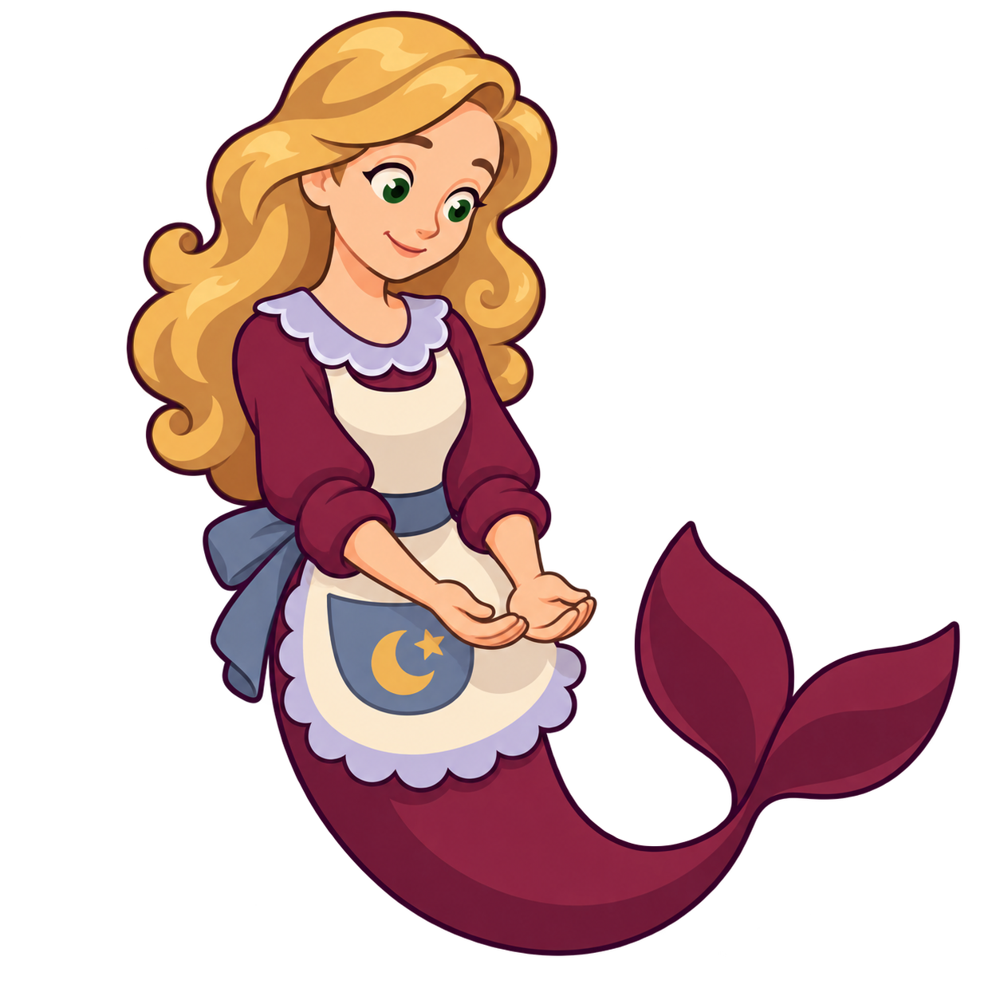
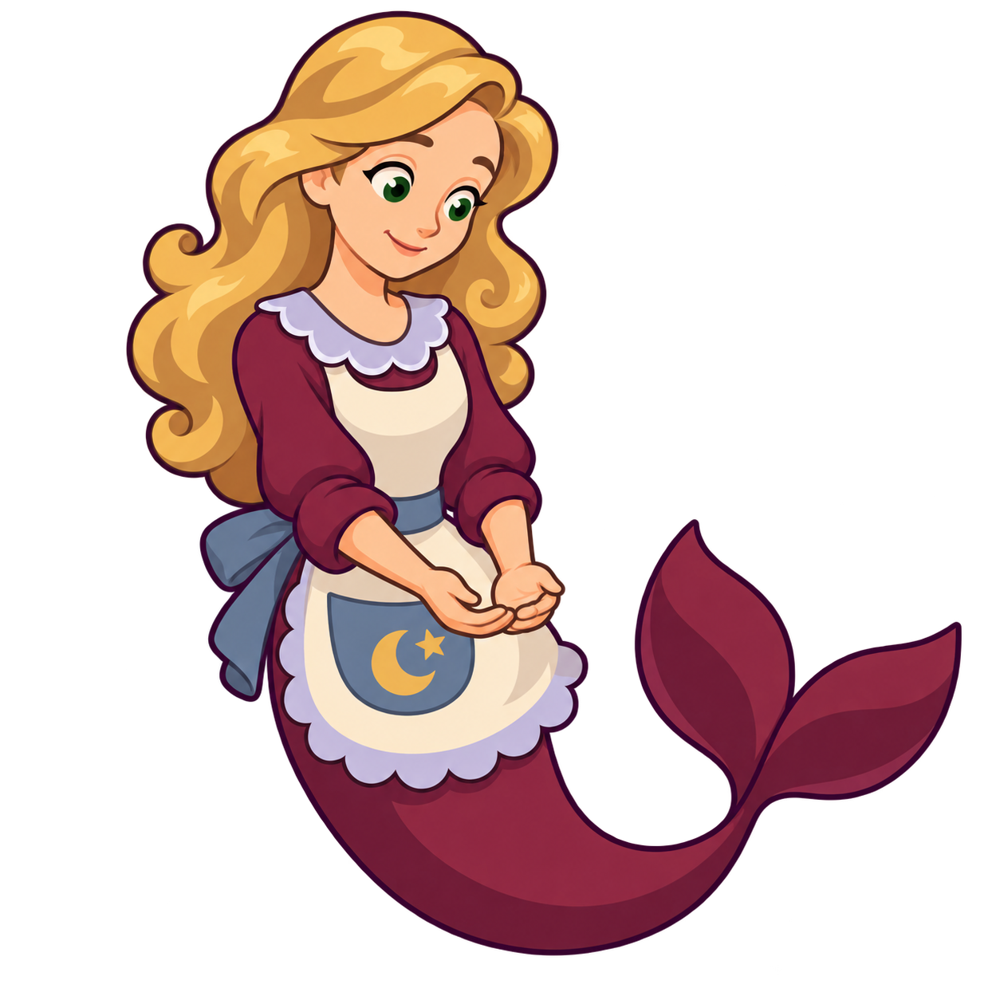
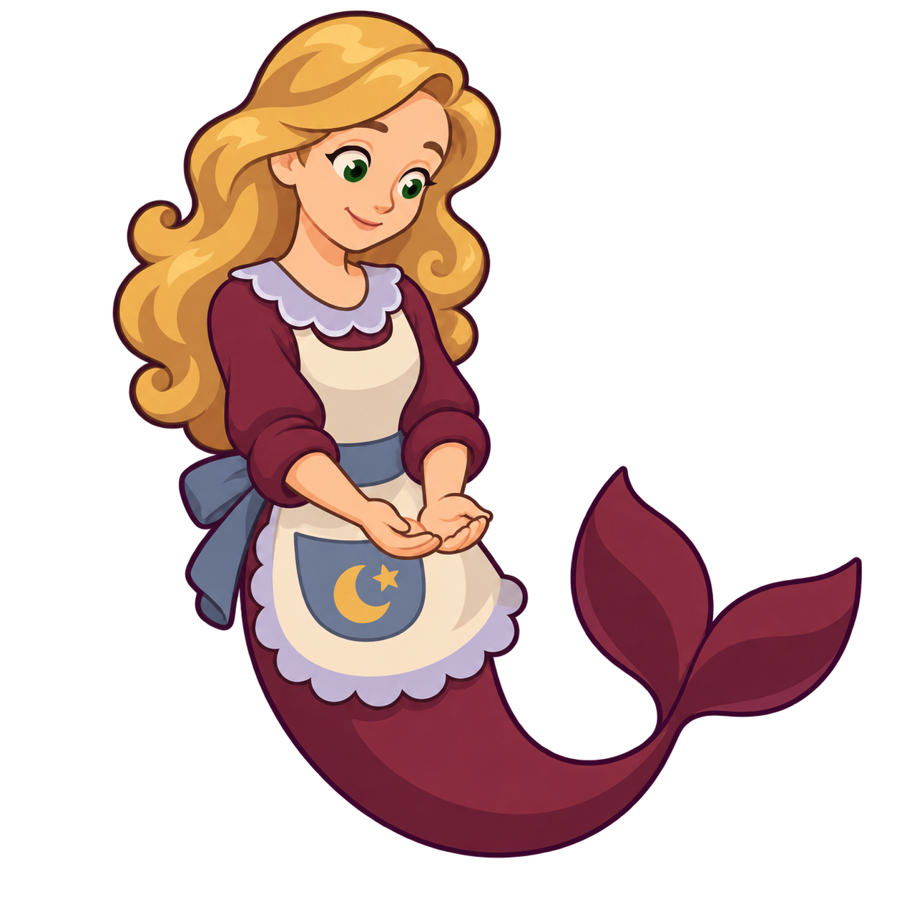
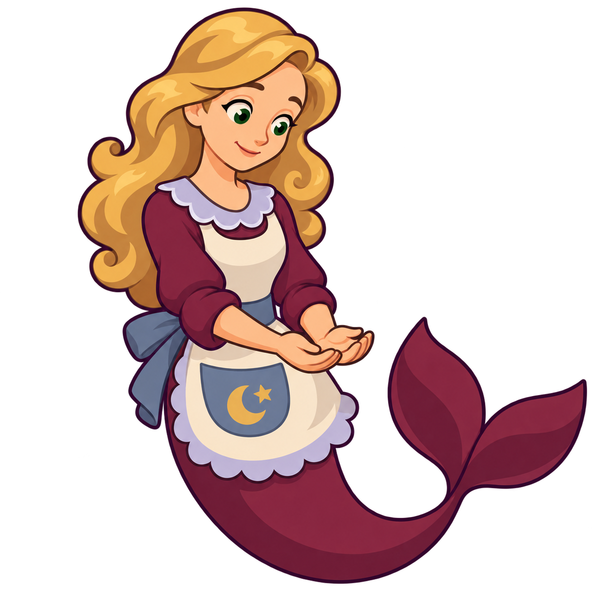
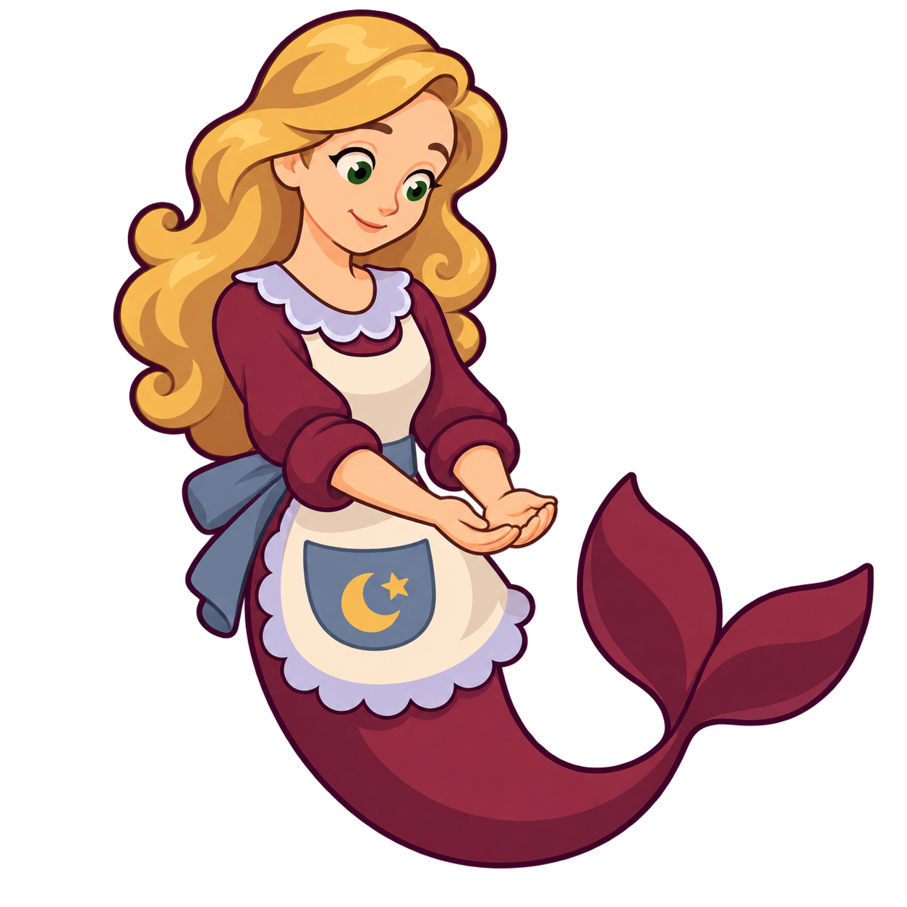
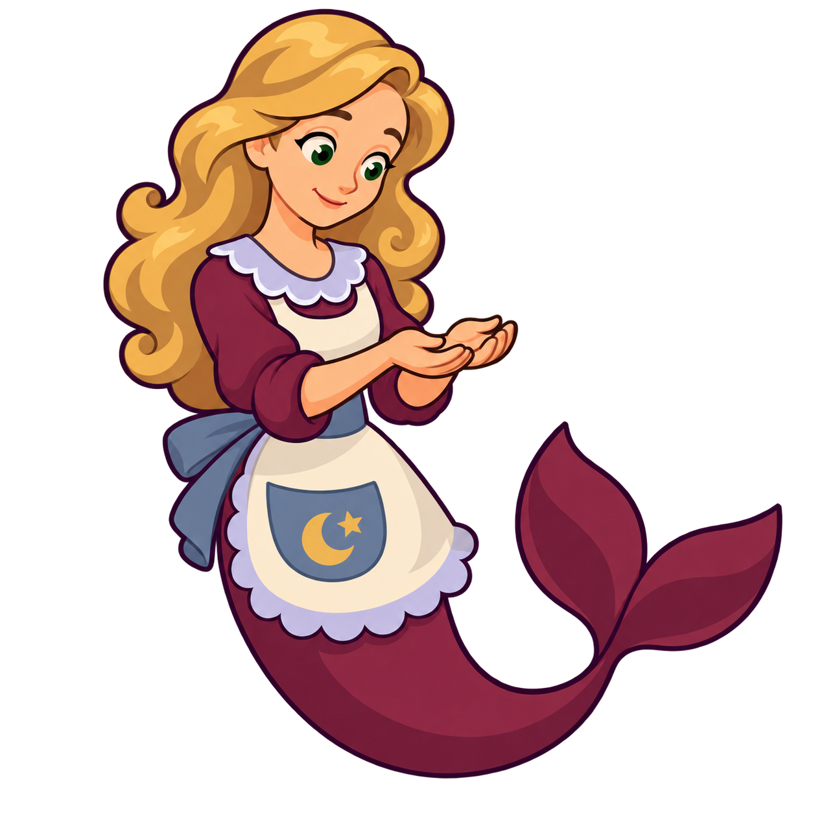
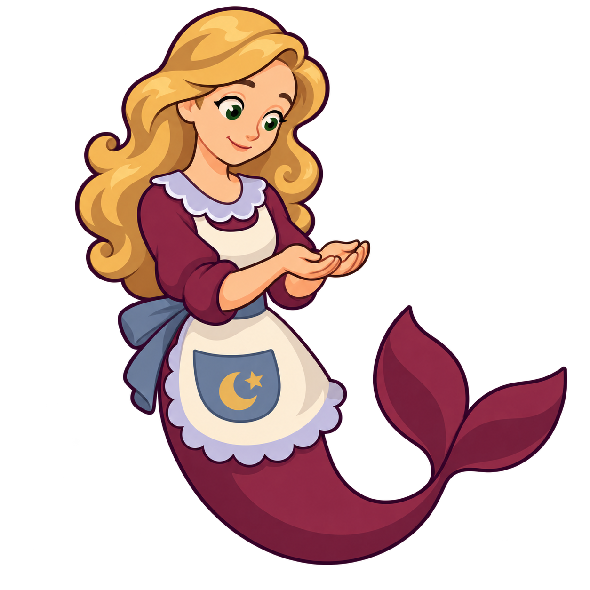
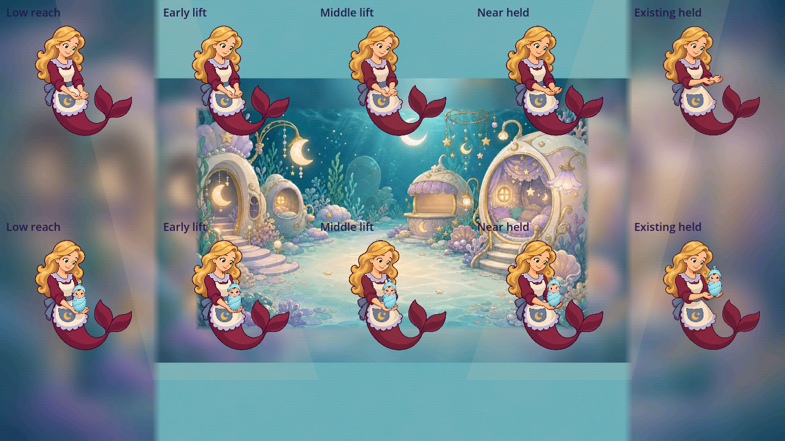
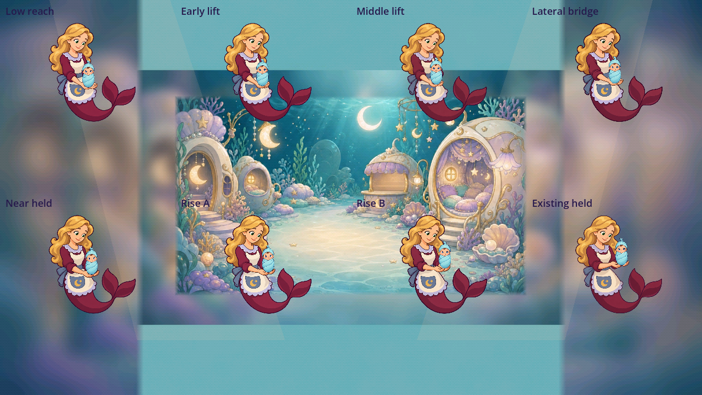
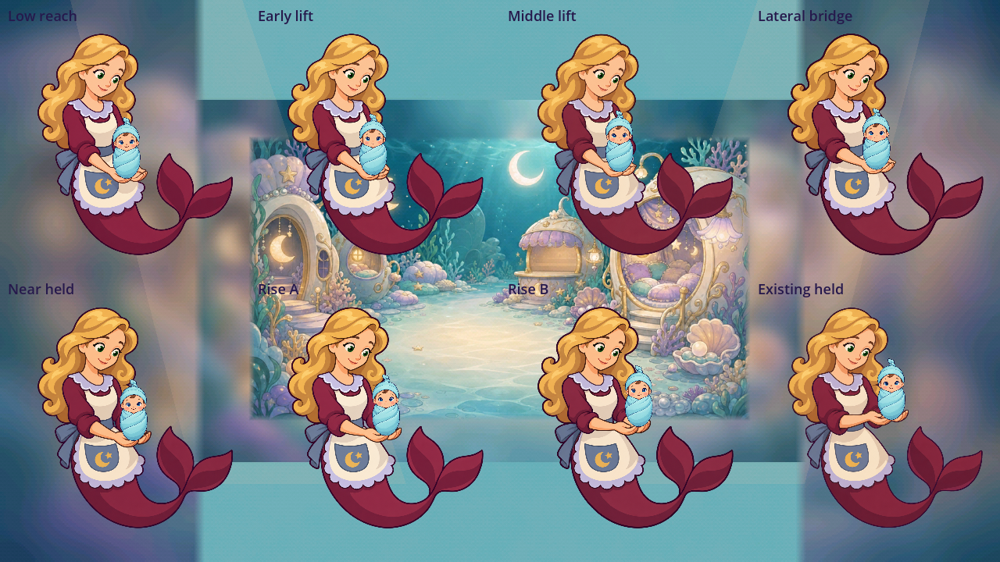

Faron helper lift source review
Ten reversible complete-source candidates, every failed request, and one reused held source. The selected eight-state source/static set has a provisional 4.6/5 drafting opinion. Timed lift review remains pending. The original helper stays bound at its earlier mounted 4.1 opinion; the complete safe-return action remains 3.4 at the recorded nursery baseline.
Individual candidates
The four initial poses missed their requested coordinates. Their actual cupped-palm positions were separately accepted for static reuse. Three first bridge attempts also missed their requested roles and remain rejected. Small second edits supply the missing waist/apron states. A failed request is not silently relabeled as a successful generation.
low-reach-attempt-01

Style 4.6/5 · Requested role 4.0/5
Actual static role 4.6/5. Complete grouped golden hair, quiet warm face, plum outline, broad matte apron/cloth/tail bands retain simplified Faron identity. Both upturned receiving palms are connected and support the separate 60 px infant in native 190 px and 300 px detail; all sources share unchanged whole-canvas card origin. Actual support is usable at a different coordinate from the requested pose. No full lift/action acceptance. The measured receiving pad misses the specific requested palm position. Preserve the failed request and its score even when separately reusing its actual static role.
Exact retained prompt string and referencelift-early-attempt-01

Style 4.6/5 · Requested role 4.0/5
Actual static role 4.6/5. Complete grouped golden hair, quiet warm face, plum outline, broad matte apron/cloth/tail bands retain simplified Faron identity. Both upturned receiving palms are connected and support the separate 60 px infant in native 190 px and 300 px detail; all sources share unchanged whole-canvas card origin. Actual support is usable at a different coordinate from the requested pose. No full lift/action acceptance. The measured receiving pad misses the specific requested palm position. Preserve the failed request and its score even when separately reusing its actual static role.
Exact retained prompt string and referencelift-middle-attempt-01

Style 4.6/5 · Requested role 4.0/5
Actual static role 4.6/5. Complete grouped golden hair, quiet warm face, plum outline, broad matte apron/cloth/tail bands retain simplified Faron identity. Both upturned receiving palms are connected and support the separate 60 px infant in native 190 px and 300 px detail; all sources share unchanged whole-canvas card origin. Actual support is usable at a different coordinate from the requested pose. No full lift/action acceptance. The measured receiving pad misses the specific requested palm position. Preserve the failed request and its score even when separately reusing its actual static role.
Exact retained prompt string and referencelift-near-held-attempt-01

Style 4.6/5 · Requested role 4.0/5
Actual static role 4.6/5. Complete grouped golden hair, quiet warm face, plum outline, broad matte apron/cloth/tail bands retain simplified Faron identity. Both upturned receiving palms are connected and support the separate 60 px infant in native 190 px and 300 px detail; all sources share unchanged whole-canvas card origin. Actual support is usable at a different coordinate from the requested pose. No full lift/action acceptance. The measured receiving pad misses the specific requested palm position. Preserve the failed request and its score even when separately reusing its actual static role.
Exact retained prompt string and referencelateral-bridge-attempt-01

Style 4.6/5 · Requested role 4.0/5
Unreviewed for a reuse role. Direct native visual review retains the simplified complete Faron source family. Requested-coordinate control failed: lateral state is already as extended as the near-held pose; both rising sources overshoot into chest-height cups above the intended held endpoint. The estimates are not yet native-fit acceptance landmarks. Preserve all sources and regenerate only missing lower-apron receiving states.
Exact retained prompt string and referencerise-bridge-a-attempt-01

Style 4.6/5 · Requested role 4.0/5
Unreviewed for a reuse role. Direct native visual review retains the simplified complete Faron source family. Requested-coordinate control failed: lateral state is already as extended as the near-held pose; both rising sources overshoot into chest-height cups above the intended held endpoint. The estimates are not yet native-fit acceptance landmarks. Preserve all sources and regenerate only missing lower-apron receiving states.
Exact retained prompt string and referencerise-bridge-b-attempt-01

Style 4.6/5 · Requested role 4.0/5
Unreviewed for a reuse role. Direct native visual review retains the simplified complete Faron source family. Requested-coordinate control failed: lateral state is already as extended as the near-held pose; both rising sources overshoot into chest-height cups above the intended held endpoint. The estimates are not yet native-fit acceptance landmarks. Preserve all sources and regenerate only missing lower-apron receiving states.
Exact retained prompt string and referencelateral-bridge-attempt-02
Style 4.6/5 · Requested role 4.6/5
Actual static role 4.6/5. The small arm correction preserves the calm face, grouped hair, broad matte apron and burgundy tail. Both palms support the same separate infant in the 190 px and 300 px native comparisons. The actual cup occupies the intended intermediate role. Original attempt 1 remains a failed 4.0 request. This static source opinion does not establish the complete safe-return action.
Exact retained prompt string and referencerise-bridge-a-attempt-02
Style 4.6/5 · Requested role 4.6/5
Actual static role 4.6/5. The small arm correction preserves the calm face, grouped hair, broad matte apron and burgundy tail. Both palms support the same separate infant in the 190 px and 300 px native comparisons. The actual cup occupies the intended intermediate role. Original attempt 1 remains a failed 4.0 request. This static source opinion does not establish the complete safe-return action.
Exact retained prompt string and referencerise-bridge-b-attempt-02
Style 4.6/5 · Requested role 4.6/5
Actual static role 4.6/5. The small arm correction preserves the calm face, grouped hair, broad matte apron and burgundy tail. Both palms support the same separate infant in the 190 px and 300 px native comparisons. The actual cup occupies the intended intermediate role. Original attempt 1 remains a failed 4.0 request. This static source opinion does not establish the complete safe-return action.
Exact retained prompt string and referenceFirst measured chain: 4.2
The original low/early/middle/near-held/held sequence contains 12.03 px and 18.12 px hand jumps at 190 px whole-card extent. Its individual static sources remain 4.6; its proposed lift continuity fails the previously declared 8 px drafting target.

Correct-alpha native initial comparison. No live helper size or input route is asserted.
Initial individual failures and measured chain
Selected eight-state static set: 4.6

190 px helper and 60 px infant, fixed whole-canvas reference, unchanged infant scale.

300 px detail shows both connected palms and contact through the sequence.
The seven nominal receiving-pad steps are 3.86,4.08,6.04,5.99,4.54,7.62 and 5.99 px. Manual picking uncertainty is roughly 5 native pixels; numerical distances supplement direct contact inspection. They do not establish physical or full gameplay acceptance.
1600-wide native contact · 1600-wide detail · Static evaluation · Exact sources, geometry and native hashes
Declared timed study
Frames 0–5 hold the low-contact inspection state. Frames 6–26 show seven complete authored pose changes, with each state exposed for three frames. Frames 27–47 hold the quiet endpoint for inspection. This is declared review playback, not measured real-time game performance.
30fps review playback
Slow inspection
1600-wide playback · All 96 lossless native review frames and complete-source bindings · Compressed inspection-copy encoding · Predeclared exposure profile
Each changed state uses one complete generated figure. No pixels are blended, interpolated, warped or repaired by translating a limb. The MP4s are compressed inspection copies; native generated PNGs and lossless WebP captures are canonical study pixels. This is interactive source review, with no cinematic delivery claim.
Still required for the in-game object
The fixed-reference lift does not approach a landed baby, acquire ownership, carry it through the actual nursery, lower into a basket, release/settle, or execute interruptions. Match the actual helper canvas size and scene ownership before reversible runtime binding, then replay all intentional, passive, held, missed and interrupted interactions. Phone/M11 performance, child/owner acceptance and comprehensive refinement of every other weak job object remain open. The all-jobs audit is not complete.